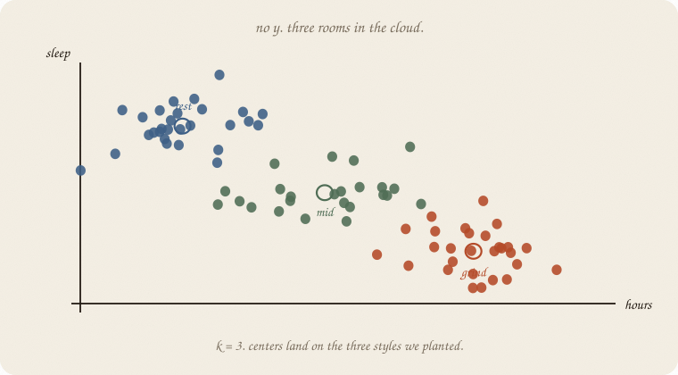
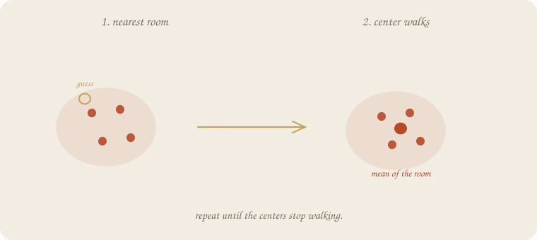
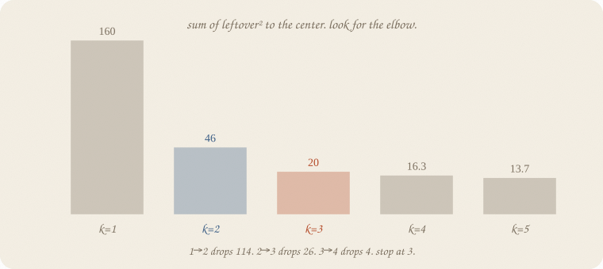
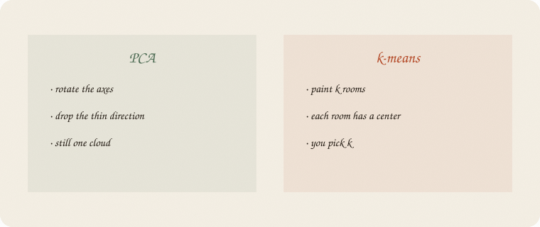
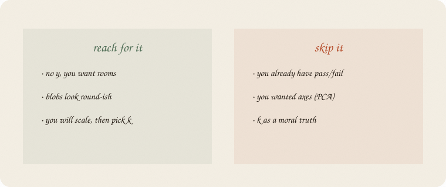

datazines · a sketchbook

Read 01 PCA first. Same exam world: hours and sleep. Still no grade. PCA asked which way the cloud is long. This notebook asks whether the cloud has rooms.
LDA drew two blobs because of pass/fail. Here nobody told us who passed. We still want names for clumps.
Flip it like a notebook. One page = one idea. Done.
Eighty students, house seed 7. Hours and sleep. No grade. Three styles planted on purpose.
Three study styles, planted on purpose:
| room | hours | sleep | people |
|---|---|---|---|
| grind | around 5 | around 5 | 28 |
| rest | around 2 | around 8 | 28 |
| mid | around 3.5 | around 6.6 | 24 |
Nobody asked who passed. Nobody asked ŷ.
The cloud still has clumps. The job: name the rooms, then maybe put a new student in one.
People call this k-means. Ugly name. Friendly job: k rooms, each with a mean.
Guess k starting spots. Then loop:

Repeat until the centers stop walking. That is the whole machine.
The leftover is not y − ŷ. There is no y. Leftover is distance to your center, squared, added up. People call that inertia. Smaller = tighter rooms.
sklearn starts the guesses with k-means++ (spread the first centers out) and tries several starts (n_init=10). Same loop after that.
Ask for 2 rooms and you get 2. Ask for 5 and you get 5. The algorithm does not know we planted 3.
Look at the leftover pile as k grows:

| k | leftover² (inertia) | drop from previous | silhouette | sizes |
|---|---|---|---|---|
| 1 | 160.0 | — | — | 80 |
| 2 | 46.2 | 114 | 0.567 | 39 / 41 |
| 3 | 20.3 | 26 | 0.575 | 28 / 28 / 24 |
| 4 | 16.3 | 4 | 0.508 | 17 / 27 / 11 / 25 |
| 5 | 13.7 | 3 | 0.434 | split further |
1 → 2 drops a cliff. 2 → 3 still drops. 3 → 4 is a whisper. Stop at 3.
Silhouette (how in-the-room vs how near-the-next-room) also peaks at 3. Not a medal. A second glance.
k = 3 recovers the plant: sizes 28 / 28 / 24. Centers land on grind 4.80 / 5.17, rest 1.99 / 7.98, mid 3.36 / 6.48.
A new student: 3 hours, 7 of sleep. Nearest room is mid. That is a label we painted, not a pass/fail.

PCA: one cloud, new axes, drop the thin direction. Still one cloud.
k-means: the same people, k buckets. No new axis. You picked k.
Do not mix the jobs. Twins (hours and minutes) are a PCA fact. Three study styles are a k-means fact. If you have pass/fail already, go back to 01 logistic regression or 02 LDA — that is a y.
Scale first when the levers are in different units. Hours and sleep here are already similar, so unscaled also finds the three rooms. Add minutes without a scaler and minutes eat the distances, same sin as unscaled PCA.
If you keep only one thing:
no y. paint k rooms. each has a center. you pick k.
Same unlabeled cloud as page 1 — eighty students, hours and sleep, no grade. Three styles planted. House seed 7.
import numpy as np
from sklearn.cluster import KMeans
from sklearn.preprocessing import StandardScaler
from sklearn.metrics import silhouette_score
rng = np.random.default_rng(7)
n1, n2, n3 = 28, 28, 24
grind = np.column_stack([rng.normal(5.0, 0.45, n1), rng.normal(5.2, 0.55, n1)])
rest = np.column_stack([rng.normal(2.0, 0.50, n2), rng.normal(8.0, 0.50, n2)])
mid = np.column_stack([rng.normal(3.5, 0.55, n3), rng.normal(6.6, 0.55, n3)])
X = np.vstack([grind, rest, mid])
names = ["hours", "sleep"]
sc = StandardScaler()
Xs = sc.fit_transform(X)
print("n", len(X))
for k in range(1, 6):
km = KMeans(n_clusters=k, n_init=10, random_state=7).fit(Xs)
if k == 1:
print(f"k={k} inertia {km.inertia_:.1f}")
else:
sil = silhouette_score(Xs, km.labels_)
print(f"k={k} inertia {km.inertia_:.1f} sil {sil:.3f} "
f"sizes {np.bincount(km.labels_).tolist()}")
km3 = KMeans(n_clusters=3, n_init=10, random_state=7).fit(Xs)
print("k=3 centers")
for i, row in enumerate(sc.inverse_transform(km3.cluster_centers_)):
print(i, {n: round(float(v), 2) for n, v in zip(names, row)})
print("new 3h, 7s → room", int(km3.predict(sc.transform([[3.0, 7.0]]))[0]))
n 80
k=1 inertia 160.0
k=2 inertia 46.2 sil 0.567 sizes [39, 41]
k=3 inertia 20.3 sil 0.575 sizes [28, 28, 24]
k=4 inertia 16.3 sil 0.508 sizes [17, 27, 11, 25]
k=5 inertia 13.7 sil 0.434 sizes [10, 17, 25, 18, 10]
k=3 centers
0 {'hours': 4.8, 'sleep': 5.17}
1 {'hours': 1.99, 'sleep': 7.98}
2 {'hours': 3.36, 'sleep': 6.48}
new 3h, 7s → room 2
k=3 is the elbow and the silhouette peak. Sizes 28 / 28 / 24 — the plant, recovered. Center 0 is grind, 1 is rest, 2 is mid. The new student (3 h, 7 sleep) lands in room 2. inertia_ is leftover². n_clusters is k. random_state=7 plus n_init=10 is the house start, not a moral.
| word | meaning |
|---|---|
| no y | unsupervised — rooms, not a grade |
| k | how many rooms you asked for |
| center | mean of the people in that room |
| inertia | leftover² to your center, added up |
| elbow | where the next k barely helps |
| silhouette | in-the-room vs near-the-next-room |
Also called (in a room):
| here | there |
|---|---|
| room | cluster |
| center | centroid |
| leftover² | inertia |

Reach for it when you have no y, the cloud looks like round-ish blobs, and you will scale, then pick k with an elbow.
Skip it when you already have pass/fail (01 logistic regression, 02 LDA); you wanted axes (01 PCA); you were going to treat k as a discovered truth.
Pays you: names for clumps, a center you can read in English, a room for a new person.
Costs you: you pick k. It will always paint k rooms, even if the cloud is one sausage. A room is not a cause. Unscaled minutes still eat the ruler.
Unsupervised 02. No grade. Rooms, not axes. Remaining rooms, short: SVM after the S; MCMC after the walk.
Flip it like a notebook. One page = one idea.